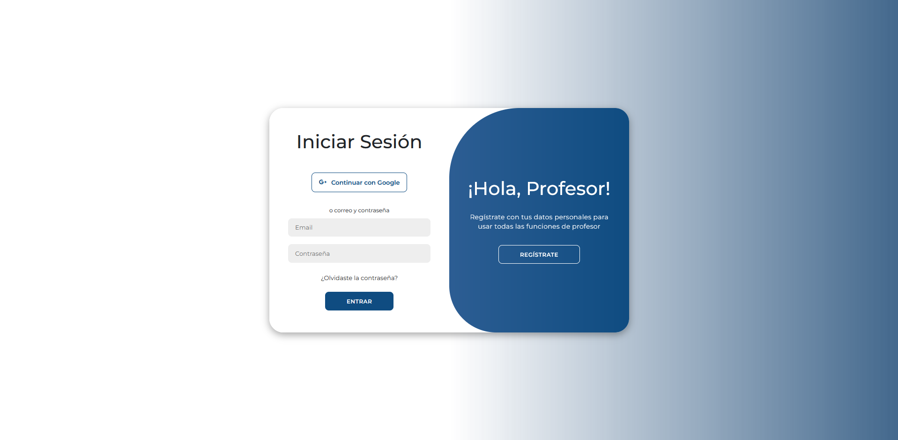
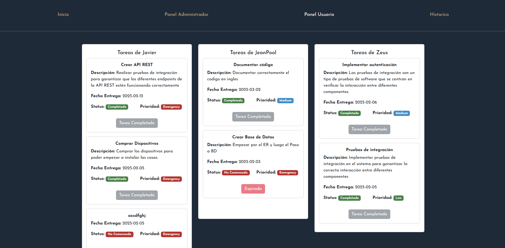
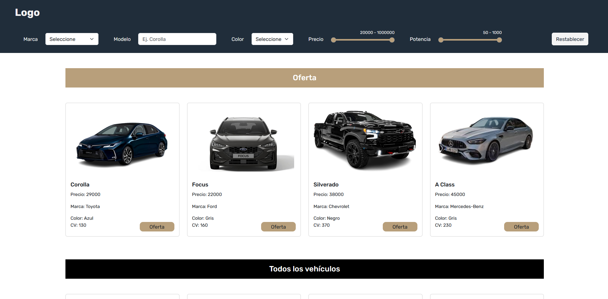
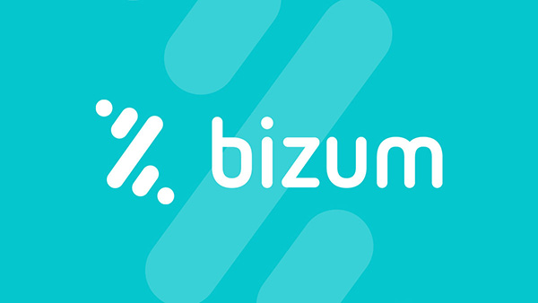
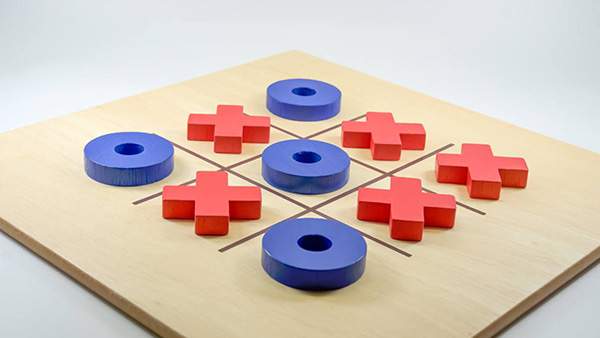

Laravel · TFGGestor de Guardias
Herramienta web para organizar, asignar y coordinar guardias de profesores en centros educativos.
Apasionado por la tecnología, el código limpio y la creación de sistemas robustos preparados para evolucionar sin deuda técnica. Especializado en el ecosistema Laravel, persistencia relacional con MySQL & SQL Server y desarrollo orientado a objetos. Actualmente desarrollo soluciones web profesionales en Rhinoceros Auklet enfocadas en escalabilidad, rendimiento y calidad de software.
Construcción de software de alta calidad, mentalidad de equipo y rigor en la arquitectura.
Me encanta programar y aprender cosas nuevas en cada desafío. Soy un apasionado del desarrollo web y me gusta estar a la vanguardia de las últimas tendencias, herramientas y estándares del sector.
Aplico con disciplina los principios SOLID para construir arquitecturas limpias, modulares y desacopladas. Cada capa de la aplicación tiene una única responsabilidad bien definida, garantizando mantenibilidad a largo plazo.
Me encanta colaborar y aportar en cada proyecto. En Rhinoceros Auklet participo en desarrollos coordinados, fomentando la comunicación transparente, el trabajo colaborativo con Git y entregas continuas de alto impacto en producción.
Comprometido con la constante evolución técnica, el diseño de software modular, la refactorización proactiva y la creación de código limpio y sostenible preparado para crecer.
Todos los repositorios públicos se abren en pestaña nueva para no perder tu navegación.

Laravel · TFGHerramienta web para organizar, asignar y coordinar guardias de profesores en centros educativos.

LaravelAplicación web para la gestión de tareas y proyectos colaborativos, con seguimiento del progreso.

LaravelAplicación para gestionar un concesionario de vehículos, incluyendo catálogo, ventas y stock.
Aplicación web para gestionar la reserva y préstamo de libros en una biblioteca con base de datos.

JavaSimulación de transferencias y pagos móviles entre usuarios con interfaz gráfica intuitiva.

Java SwingJuego clásico desarrollado en Java y Java Swing con programación orientada a objetos.
Especialidades full-stack: desarrollo backend, interfaces interactivas, bases de datos y arquitectura web.
Cronología de trayectoria laboral y formación académica.
Desarrollo web full-stack en Laravel y mantenimiento de plataformas corporativas de alta exigencia. Diseño de arquitecturas escalables, desacopladas y mantenibles con persistencia relacional en MySQL y SQL Server, optimización de rendimiento y creación de soluciones de software robustas adaptables a cualquier sector o lógica de negocio.
Formación técnica superior en desarrollo full-stack, ingeniería de software en PHP/Laravel, bases de datos relacionales, JavaScript, TypeScript y despliegue de aplicaciones web.
Certificación oficial de competencia lingüística en lengua inglesa.
Instalación y mantenimiento de sistemas operativos, configuración de redes locales y servidores.
Etapa de formación secundaria obligatoria.
Canales directos para conversar sobre proyectos, arquitectura o colaboraciones.
Descarga mi currículum completo con toda la información sobre experiencia laboral, proyectos empresariales en producción, competencias técnicas y titulación reglada.
Descargar CV (PDF)España · Disponible para proyectos en remoto o presenciales.
Descripción del proyecto